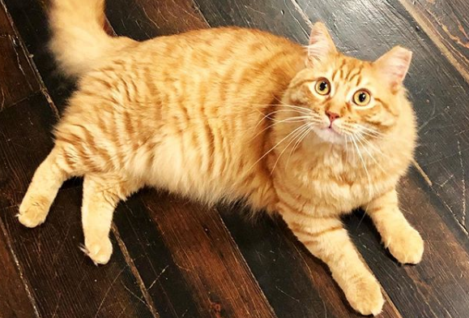

Los gatos domésticos, sea cual sea su raza, son todos miembros de una misma especie, Felis catus, que mantiene una relación con los humanos desde hace mucho tiempo. Los antiguos egipcios habrían sido los primeros en domesticar gatos, hace ya 4.000 años. Probablemente, los gatos salvajes se vieron atraídos a las comunidades humanas por la abundancia de roedores que había en ellas, y su habilidad para cazarlos les hizo ganarse la simpatía de sus habitantes. Los primeros egipcios adoraban a una diosa con figura de gato e incluso momificaban a sus mascotas preferidas para que les acompañaran en su viaje al otro mundo...¡acompañados de ratones también momificados! Posteriormente, civilizaciones de todo el mundo adoptaron a los gatos como animales de compañía.
